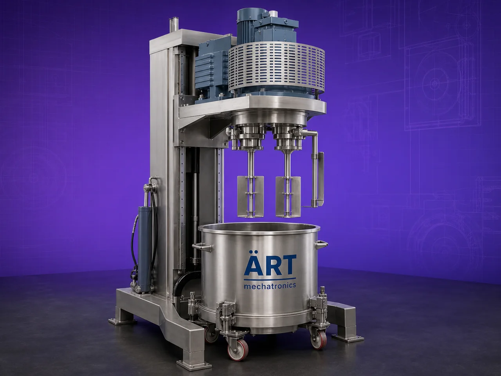

Planetary Mixer Machine (Industrial High Viscosity Mixing & Blending System)
A Planetary Mixer Machine, also known as an Industrial Planetary Mixer or Planetary Blending System, is a specialized industrial mixing equipment designed for uniform and intensive mixing of high-viscosity materials such as dough, batter, paste, cream, slurry, adhesives, putty, and thick formulations.

About the Planetary Mixer
The machine operates using a planetary mixing motion, where the mixing tool rotates on its own axis while simultaneously revolving around the mixing bowl, similar to the motion of planets around the sun. This unique movement ensures:
- Complete material coverage
- Uniform blending
- Thorough kneading
- Lump-free mixing
- Excellent mixing efficiency
Planetary mixers are widely used in industries such as:
• Food processing
• Bakery
• Pharmaceuticals
• Cosmetics
• Chemicals
• Paints
• Adhesives
• Construction materials
• Battery and specialty material industries
where high-intensity mixing and handling of viscous materials are essential.
ART Mechatronics offers high-performance planetary mixer machines, engineered for powerful mixing action, hygienic operation, heavy-duty industrial use, and reliable long-term performance.
One machine, many names
Buyers search for this equipment under many terms — we manufacture all of them:
Working Principle of Planetary Mixer Machine
Ensures complete and intensive mixing action
Types of Planetary Mixer Machines
Industries Using Planetary Mixer Machine
🍞 Bakery & Food Industry
- Dough mixing
- Batter preparation
- Cream blending
💊 Pharmaceutical Industry
- Paste and ointment mixing
💄 Cosmetic Industry
- Cream and lotion blending
⚗️ Chemical Industry
- Adhesives and slurry mixing
🎨 Paint & Coating Industry
- Pigment and coating blending
🔋 Battery & Specialty Material Industry
- Lithium and slurry mixing
🏗️ Construction Material Industry
- Putty and paste blending
Features & Advantages
- Powerful planetary mixing action
- Suitable for high-viscosity materials
- Uniform and lump-free blending
- Excellent kneading and folding action
- Heavy-duty industrial construction
- Optional scraper and jacketed system
- Hygienic and easy-to-clean design
- Suitable for batch processing
- Energy-efficient and reliable operation
Technical Highlights
- Capacity: Small lab scale to large industrial scale
- Mixing Type: Planetary motion mixing
- Construction: Stainless Steel / Mild Steel
- Mixing Tools:
- Beater
- Paddle
- Dough hook
- Scraper
- Heating/Cooling: Optional jacketed system
- Operation: Manual / Automatic / PLC-based
Turnkey Mixing Solutions
ART Mechatronics offers:
- Complete planetary mixer system design
- Vacuum and jacketed system integration
- Heating and cooling arrangements
- Feeding and discharge automation
- Installation & commissioning
- After-sales service & AMC
Why Choose Art Mechatronics
- Expertise in industrial high-viscosity mixing systems
- Customized solutions for multiple industries
- Heavy-duty and reliable machine construction
- Hygienic and energy-efficient designs
- Proven industrial performance
Applications
- Bakery & Food Processing Plants
- Pharmaceutical Manufacturing Units
- Cosmetic Production Facilities
- Chemical Processing Plants
- Paint & Coating Industries
- Battery Material Processing Units
Industries that use the Planetary Mixer
Related Mixing & Blending machines
Get pricing & specs for the Planetary Mixer
Share the product, target capacity, current process and plant location. These details help our engineers discuss the right machine or line configuration.
One partner, from design to start-up
ART Mechatronics designs, manufactures, installs and commissions your Planetary Mixer solution with regional presence in India, UAE and Thailand.